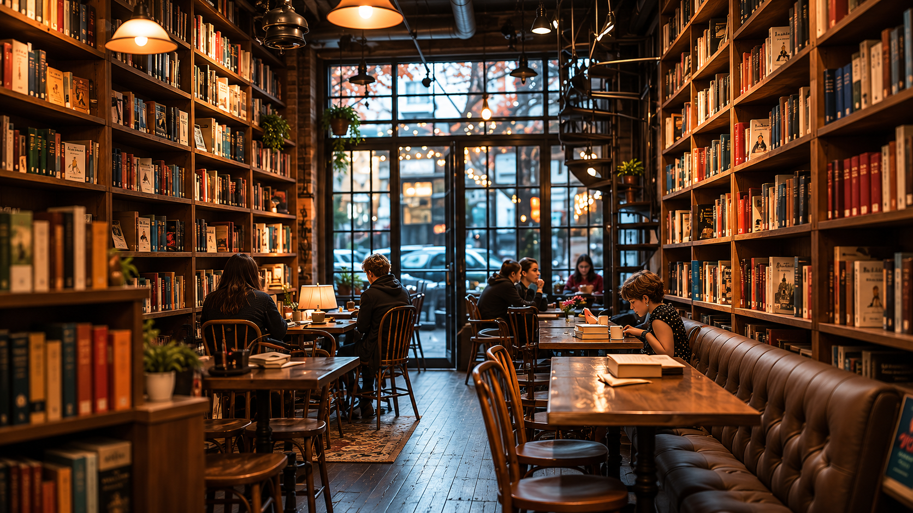

Meet Our Head Librarian

Rasik Dahal
Rasik loves books, coffee and helping readers discover their next favourite story. He recommends books based on every visitor's interests.
Where Every Book is Served Like a Cup of Coffee

Anzilaa Book Cafe Hub is a book cafe where visitors can enjoy reading books while drinking freshly brewed coffee and eating homemade cookies. Our goal is to create a comfortable place where stories, friendship and delicious refreshments come together.
We believe that every book has the power to inspire, educate and entertain readers of every age.
Our mission is to encourage reading by creating a comfortable and creative place where imagination grows with every page.
Rasik loves books, coffee and helping readers discover their next favourite story. He recommends books based on every visitor's interests.
| Day | Time |
|---|---|
| Monday - Friday | 8:00 AM - 10:00 PM |
| Saturday | 10:00 AM - 9:00 PM |
| Sunday | Closed |